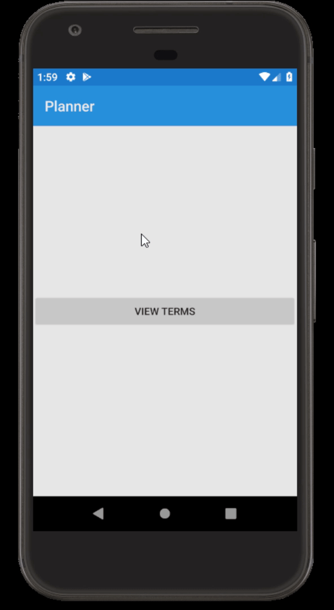
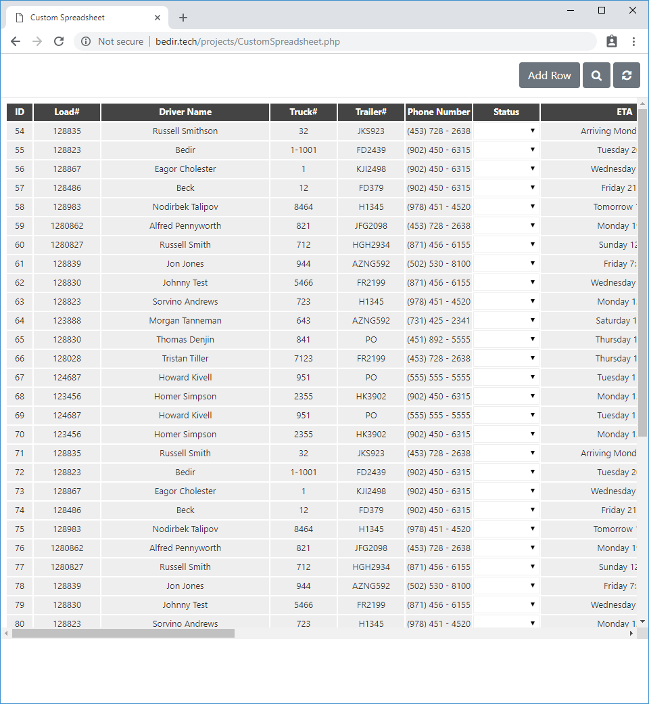
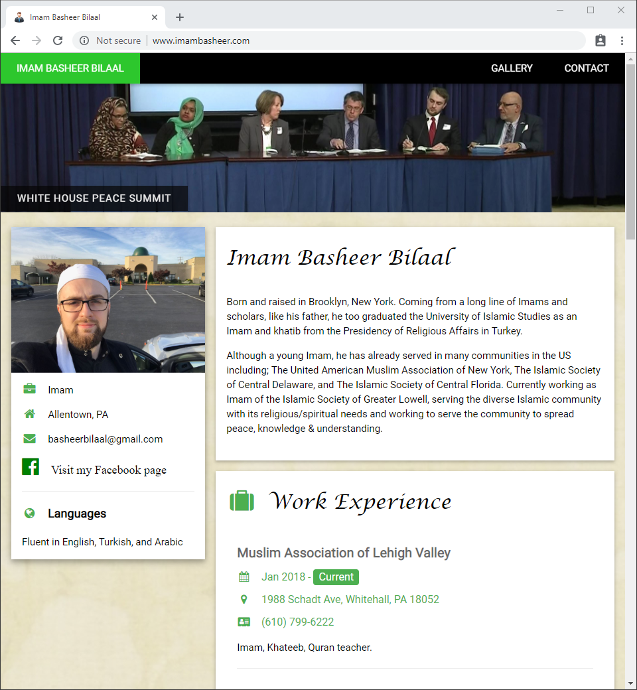
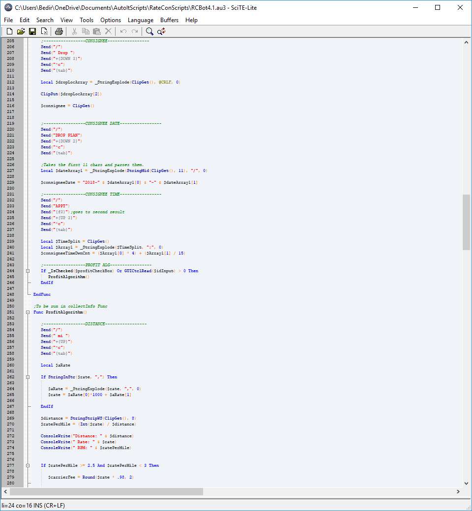
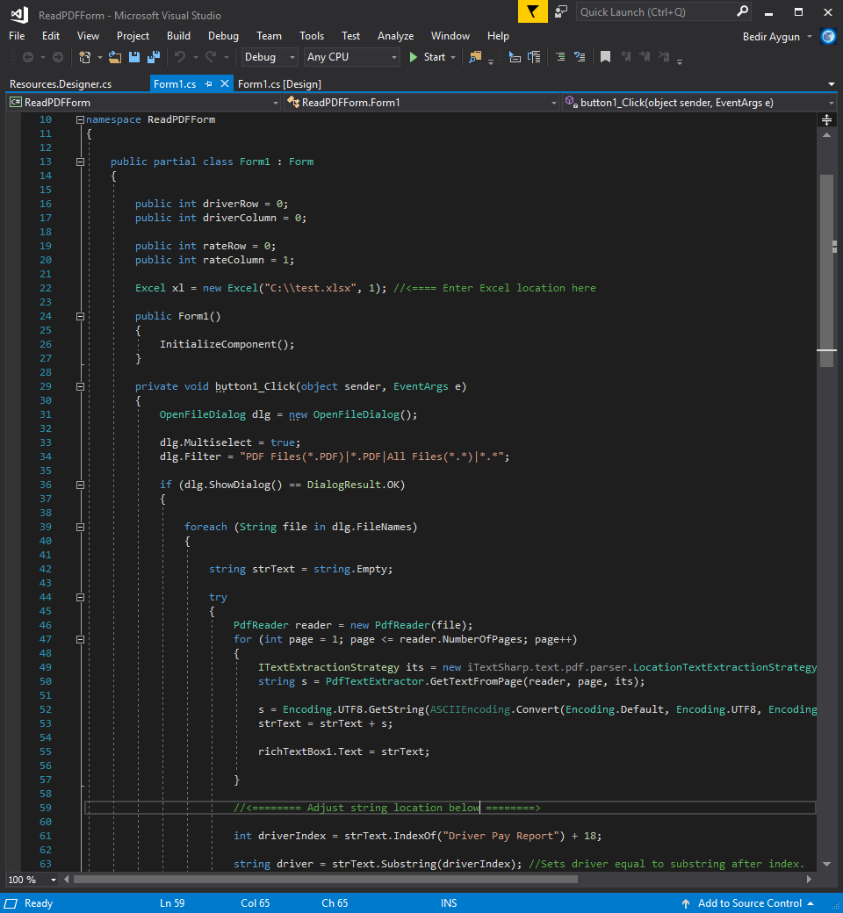
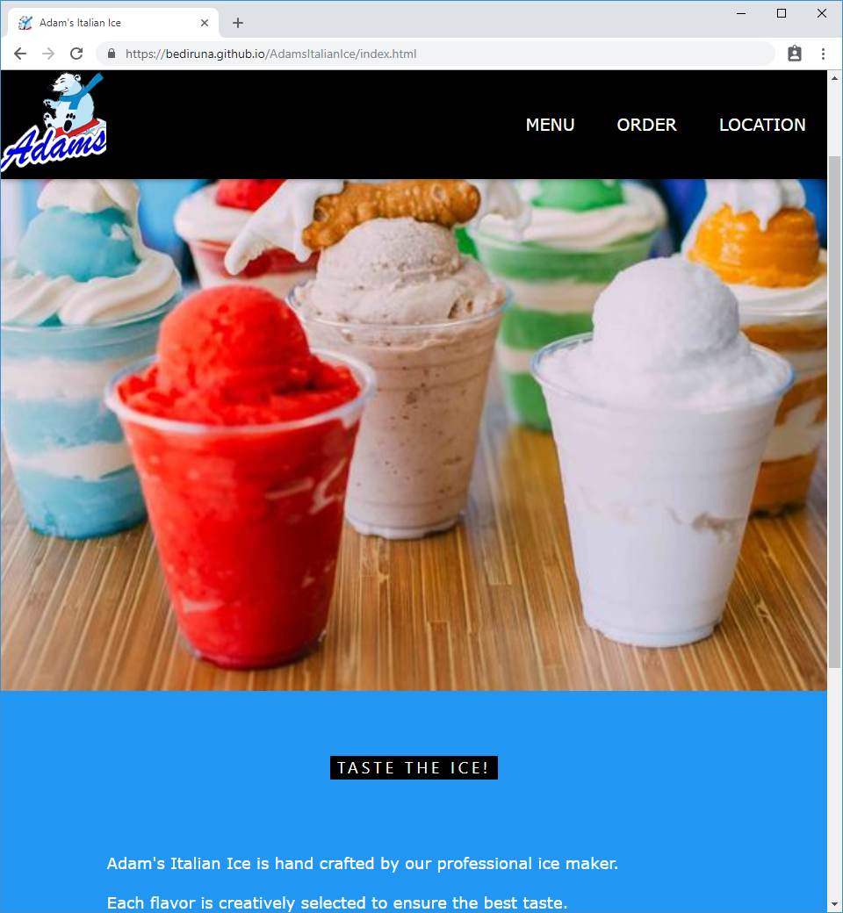

My Projects
Here are some of the projects I am either working on or have completed

Student Planner Xamarin App
Mobile application made using Xamarin. Stores and tracks term, class, and assignment information. Published to play store, click to download.
A Bedir University
A custom university portal meant for accepting student applications, student portal, and admin portal. Built using ASP.NET C# and web technologies.

Nour Limousine
Website created for a limousine service based in New York. Created using CSS, HTML, and JavaScript.

Custom Spreadsheet
Custom spreadsheet software that reads and writes from a JSON file. This software was built to be lightweight and responsive.

Imam Basheer
Personal Page for Imam Basheer. Created using HTML, JavaScript, and CSS.
Math Ninja
Educational math game designed to sharpen quick mental math skills. Created using Java based Processing Development Environment
View Github Repository

Automation Scripts
Automation scripts written to automate repetive and error prone tasks. This saves hours of time and strain while also minimizing errors. Written in a visual basic like language in AutoIt.

Read PDF & Create Spreadsheet
This application reads multiple PDF files and searches for spefic values. The software then enters those values into an excel spreadsheet for reporting. In this example multiple invoices with the same format are searched for the customer name and total income. This software was written with C#.

Adam's Italian Ice
Website created for a local italian ice business. Created using CSS, HTML, and JavaScript